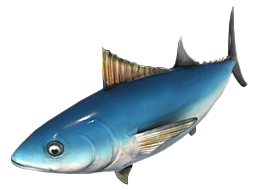

Just one possibility for how to go land aggression with fish. Fish are always worth fighting for, even with maps on which most of the aggression will take place on land. Despite investing into fire galleys to protect your fish, your archers are only slightly delayed and you can reach castle significantly earlier when comparing to the standard archer build. Credits to Hera for this one - see link below.
When generating new maps, randomness in fish placement can mean that your castle time may vary more with this build. Always prioritise deep fish over collecting shore fish with fishing ships.
| Build Order | |
|
|
 |
|---|---|---|---|---|
| 6 on sheep | 6 | |||
| 4 on wood | 4 | 6 | ||
| 1 lure boar | 4 | 7 | ||
| 1 build dock* | 4 | 7 | ||
| Start making 4 fishing ships | ||||
| +2 on wood | 6 | 7 | ||
| Rest to sheep/boar | 6 | 14 | 4 | |
| Loom | ||||
| Advancing to Feudal | ||||
| ↑14 on wood [2nd LC], rest to stragglers | ||||
| 4 to gold | 16 | 4 | 4 | |
| Build barracks | ||||
| Feudal | ||||
| Double-bit axe, make fire galleys | ||||
| Build 2 ranges, make archers | ||||
| ↑8 on gold | 16 | 8 | 4 | |
| Build blacksmith, get fletching | ||||
| Finish sheep, then berries | 14 | 6 | 8 | 4 |
| + farms, ↓10 on wood | 10 | 16 | 8 | 4 |
| Wheelbarrow |
*Make a house first - this villager becomes the designated builder, and should build houses and other buildings as needed.
| Benchmarks | A+ | A | B | C | D | E |
|---|---|---|---|---|---|---|
| 26 pop Feudal | 8:00 | 8:10 | 8:20 | 8:35 | 9:00 | 9:30 |
| 3 fire galleys, 8 archers + fletching | 14:30 | 14:50 | 15:15 | 15:40 | 16:10 | 16:45 |
| Click Castle with 18 archers | 17:30 | 18:00 | 18:30 | 19:00 | 19:40 | 20:30 |